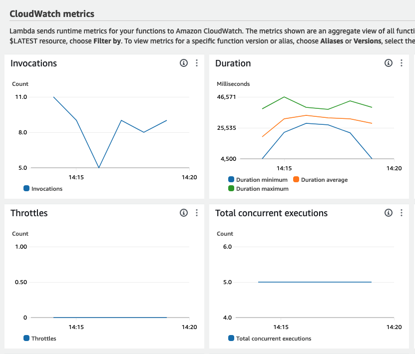
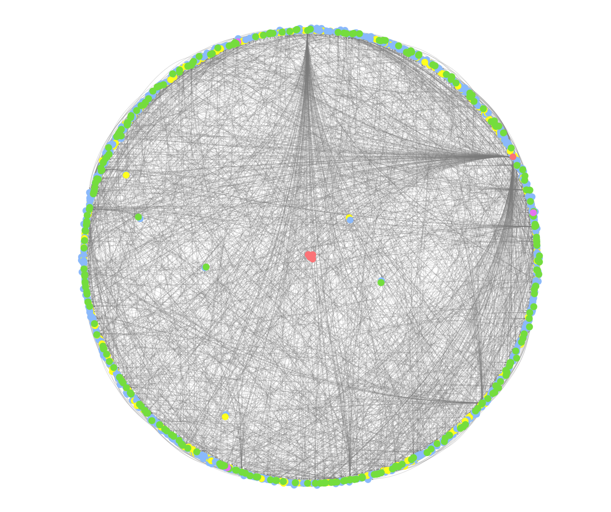

In the rapidly evolving realm of web development, the abundance and dynamism of technical content
present both an opportunity and a challenge. Web developers, ranging from novices to experts, constantly
seek up-to-date and relevant resources like tutorials, code examples, news, and event information.
However, the vastness of available information, scattered across multiple platforms such as DevDocs,
GitHub Pages, MDN Web Docs, Reddit, and others, often leads to information overload. Recognizing this
challenge, our project aims to develop a multi-device, service-oriented system that intelligently
models and manages this plethora of public technical content.
Leveraging the principles of Linked Data, our system not only aggregates content from various sources
but also semantically enriches it, thereby enhancing its discoverability and usability. The core of our
approach lies in creating a network of interconnected data, which is more meaningful and context-aware
compared to the traditional isolated data silos. By utilizing a SPARQL endpoint, we enable both human
users and software agents to query and retrieve web development knowledge tailored to specific criteria
such as programming languages, frameworks, target platforms, purposes, geographical areas, and time
periods. This personalized approach ensures that users receive content that is most relevant to their
individual needs and preferences.
To further enrich the knowledge base, our system integrates additional insights from authoritative
sources like DBpedia and Wikidata. This integration not only broadens the spectrum of available
information but also adds layers of credibility and depth to the content.
In essence, our project represents a step towards a smarter, more connected, and user-centric approach
to managing web development knowledge. It promises to be a valuable tool for the global community of web
developers, enabling them to stay abreast of the latest trends, technologies, and best practices in the
field.
Project Scope
The scope of this project encompasses several key areas, aiming to provide a comprehensive solution to
the challenges faced by web developers in accessing, managing, and utilizing technical content. The
project's scope can be outlined as follows:
Content Aggregation and Management:
Aggregating and managing public technical
content from sources like DevDocs, GitHub Pages, MDN Web Docs, Reddit, including tutorials,
source-code examples, news, events, and more.
Personalization and Customization:
Tailoring content based on criteria such as
programming languages, frameworks, target platforms, user preferences, geographical
locations,
and
time periods.
Integration with DBpedia and Wikidata:
Enriching the knowledge base by integrating
additional knowledge from DBpedia and Wikidata.
SPARQL Endpoint for Data Access:
Providing access to the knowledge base via a
SPARQL endpoint, enabling complex queries and retrieval of specific information.
Multi-Device Accessibility:
Ensuring seamless access and usability across various
devices including desktops, laptops, tablets, and smartphones.
User Experience and Interface Design:
Focusing on creating an intuitive and
user-friendly interface for navigating, searching, and utilizing the content.
Architecture
From the beginning, we employed a cloud-native approach to the development and architecture of our
application. Components were designed in a scalable manner, and as detached as possible to allow for
horizontal scaling.
Architecture diagram of our app, including the AWS services used for deployment.
Front-end
The front-end of our app handles the presentation and interactivity. It allows users to
authenticate, set their preferences and browse scraped content. It also allows user to write and
execute SPARQL queries in-app.
Back-end
Services
Web App
This is where most of the business logic resides. The app handles user
authentication and iteractions, and also serves as a gateway to the graph database
to allow users to execute SPARQL queries.
Web Crawlers Service
This service handles crawling and extracting useful data from websites to be loaded
into our graph database. We designed it in such a way as to allow for easy extension
via the addition of different crawlers for different websites, and implement a
proof-of-concept crawler for the MDN
web docs website. The service is composed of 3 main components, along with a
temporary storage for crawled data.
URL producer
This function crawls a single page (given as input) for other URLs that should
be crawled. This component needs to be highly specific for the website that is
crawled, in order to filter and only URLs from the same website (examples of
unwanted URLs are links to other websites, or links to the authentication page
of the current website, or to one of its user's profiles). The URLs are then
sent to a queue to be processed.
URL queue
This queue acts as a buffer between the producers and the consumers. Each URL
sent to this queue is wrapped within a message, along with a text field that
specifies which consumer should handle it (in our POC, we set this field to
"MDN" to indicate the URLs should be processed by the MDN crawler).
Crawler
This function consumes URLs from the queue and parses the content from
their respective webpages. The parsed content is then stored in RDF/XML
format to be imported into the graph database in bulk.
Crawl storage
Because importing extracted RDF data from each URL one by one would be
inefficient and would increase the load on our database consistently, we decided
to instead opt for a bulk load approach. For this, we used a temporary storage
where the crawlers would save the extracted RDF data, after which a manual load
into the database would be triggered.
Storage
Our app stores two different types of data - user data (such as authentication information
and preferences) and resource/content data (such as data scraped from websites). For this, we
used two different storages. The content storage is also queryable via a
publicly-accessible SPARQL endpoint.
Technologies used
Backend technologies
Java and Spring Boot as the app needs to handle potentially large amounts of data
and user requests, Java's scalability and Spring Boot's efficient resource
management ensure that our application can grow and perform well under increased
loads.
For web scraping, we used Python as it is known for its simplicity and readability,
making it ideal for
quickly developing web crawling scripts and tools. We used the RDFLib Python library for crawling
websites and extracting RDF data.
Frontend technologies
Angular for user interface
Database management system
Amazon DynamoDB is a NoSQL database that is more suited towards our needs, as it
allows for a flexible schema which goes hand-in-hand with rapid development.
Amazon Neptune, a graph database, will also be used to store the content and the
relationships. This database is great for our use case as it natively allows queries
using SPARQL to be made on its contents. We also used Amazon SageMaker Jupyter
notebooks to browse through, visualize and quickly query the data.
Security
Spring security as it provides a wide range of security features, including
authentication,
authorization, protection against common vulnerabilities (like CSRF, XSS), and
session management, crucial for any web application.
Lombok to create the data model classes and then annotate the fields with standard
Java validation annotations (like @NotNull, @Size, etc.) for validation purposes.
JSON Web Tokens (JWT) to manage access and authorize users across our various web
pages and APIs, as this eliminates the need to have a centralized database that all
services need to connect to in order to query user permissions.
Deployment
We used the Amazon Web Services (AWS) cloud to deploy and host our application. Deploying
directly on the cloud has many advantages, but we are mostly interested in the reduced operational load
that this approach provides as opposed to a more DYI model (such as self-hosting). By not having to
focus on managing local/self-hosted infrastructure and relying on AWS managed services, we have instead
focused on developing the core functionalities of our app. We chose AWS over other cloud providers
because we both have some experience using it, and because of the very generous free tier it offers.
Static Website
For the deployment of the static website (front-end), we used the AWS S3 service and its website hosting capabilites. Since
the front-end consists of HTML, CSS, Javascript and other static content (such as images), we were
able to simply build our Angular application and host it in a S3 bucket.
Web Application
For the deployment of the web application back-end, we used the AWS
Elastic Beanstalk service. This is a service that manages the deployment of server code, and
automatically handles provisioning capacity, load balancing, scaling and health monitoring. Elastic
Beanstalk uses other AWS
services such as EC2 (virtual machines) to host and deploy
our Spring Boot Java application, and handles the creation and management of other infrastructure
such as IAM roles, Elastic IP addresses and security groups.
Web Scraping
In order to handle scraping large amounts of data from various sources, we decided to use AWS Lambda in conjunction with AWS SQS. To overcome the run time limitations of
Lambda functions (currently the maximum allowed run time of a single Lambda function is 15 minutes,
which might not be enough to download and parse a large enough batch of pages), we decided to
instead take advantage of Lambda's scalability. We designed our worker Lambdas to work on batches of
5 URLs, and allowed for up to 5 concurrent executions. By modifying the batch size of the SQS
trigger and the concurrency limit, we can fine-tune the speed at which URLs from the queue are
consumed, and thus data to be imported is produced.

Some metrics of the worker Lambdas crawling 273 pages in around 5 minutes, with the previously
described configuration. As it can be seen, this solution is highly scalable as well as
reasonably fast.
The crawler Lambdas store the extracted data in RDF/XML format into a S3 bucket. Periodically, bulk
loads are triggered so that the data is imported into our graph database, where it can be queried
via SPARQL.
Storage
Our app stores two different types of data - user data (such as authentication information and
preferences) and resource/content data (such as data scraped from websites). For this, we used
two different types of storage.
User storage
For storing user data, we used Amazon
DynamoDB. We chose it because it is a a fully managed, serverless NoSQL database
that has various helpful features such as automatic backups and caching, and is very
cheap, with 25 GB of storage included in the free tier. It can also be installed
locally, which we made use of during the development of the app.
Content storage
Since the scraped content has to be queryable via SPARQL, it only makes sense for
us to store it into a easy-to-query graph database. This is why we chose Amazon Neptune, a managed
high-performance graph database that allows us to store large amounts of scraped
data, along with the relationships between the things we scrape.
AWS also provides a Jupyter environment to run notebooks in, which allowed us to quickly
query and visualize the data contained in our Neptune instance.

Graph representation of the ~10,000 nodes crawled from MDN web docs.
Future Enhancements
Comments on Posts:
Implementing a feature that allows users to comment on tutorials,
articles, and other shared content. This will facilitate community discussions, provide a
platform for sharing insights, and enable peer-to-peer support and collaboration.
Likes and Reactions:
Introducing a system for users to express their appreciation or
feedback on posts through likes and various reaction options. This feature will help in
gauging
the
popularity and relevance of the content, as well as encourage more user interaction.
User-Generated Content Moderation:
Developing tools and policies for moderating
user-generated content such as comments and posts to ensure a positive and respectful
environment.
This includes implementing automated filters for inappropriate content and providing users
with
the
ability to report concerns.
Personalized Content Recommendations:
Leveraging user interactions like comments and
likes
to refine the content recommendation algorithms. This will help in delivering more
personalized
and
relevant content to users based on their engagement patterns and preferences.
Notification System:
Creating a notification system to alert users about new comments,
reactions, and updates on the content they follow or contribute to, enhancing user
engagement
and
retention.
Data models
Our app will handle two main types of data - user data and external resources/content. User data will be
mainly composed of authentication info such as e-mails and passwords, but also user-specific
preferences. These can range from programming languages to frameworks and platforms, and will be heavily
overlapped with the content data. External resources will be composed of data scraped from various
websites about web development. We will split this data into different categories, such as tutorials,
news, code examples etc. and store various metadata about them, including relationships with other
subjects. More info about the data models can be found in our OpenAPI
specifications.
Linked data principles
Web Developer Companion is adhering to Linked Data principles and becomes part of a larger,
interconnected web of data,
which enables richer and more meaningful data discovery, sharing, and utilization as it alligns with:
Identifying Content with URIs
Each piece of content (like tutorials, code snippets, news) and entities
(like authors, frameworks, languages) in this system is assigned a unique URI. This makes every
element
within this platform easily identifiable and referenceable.
Dereferencing URIs Over HTTP
Users and software agents can access these URIs over HTTP to retrieve
information. This will be integrated into this API, ensuring that when a URI
is
accessed, it leads to a specific content piece or entity with relevant information.
Standardized Information Representation
When a URI is accessed, the information is presented in a
standardized format like RDF or JSON-LD. This ensures compatibility with other Linked Data
systems and
makes it easier for both humans and machines to process and understand the data.
Interlinking Content
This system interlinks content within its database and also links out to external
sources. For example, a page about a Python tutorial might link to related Python content within
this
system and to external resources like Python’s official documentation or relevant DBpedia
entries.
Conclusion
As we conclude our exploration of the multi-device, service-oriented system designed to manage and
model public technical content for web development, it is clear that this project stands at the
confluence of innovation, usability, and community engagement. Our system not only addresses the current
needs of web developers for a centralized, intelligent, and easily accessible knowledge base but also
paves the way for future advancements in how technical content is consumed and interacted with.
By aggregating diverse resources from platforms like DevDocs, GitHub Pages, MDN Web Docs, and Reddit,
and enriching them through Linked Data principles, we have laid the groundwork for a more interconnected
and context-aware learning environment. The incorporation of user-customizable features, including
personalized content filters based on various criteria, ensures that our system remains relevant and
valuable to a broad spectrum of users, from beginners to seasoned professionals.
Looking ahead, the planned enhancements such as user comments, likes, and a robust moderation system
will transform our platform into a dynamic and interactive community hub. This evolution will foster a
more engaged and collaborative space, where knowledge sharing and peer-to-peer learning are not just
facilitated but actively encouraged.
In essence, our project is more than just a content management system; it is a testament to the
ever-evolving landscape of web development and the relentless pursuit of innovation that defines this
field. We believe that our system will make a significant contribution to the way web developers access,
share, and grow their knowledge, ultimately enriching the entire web development community.